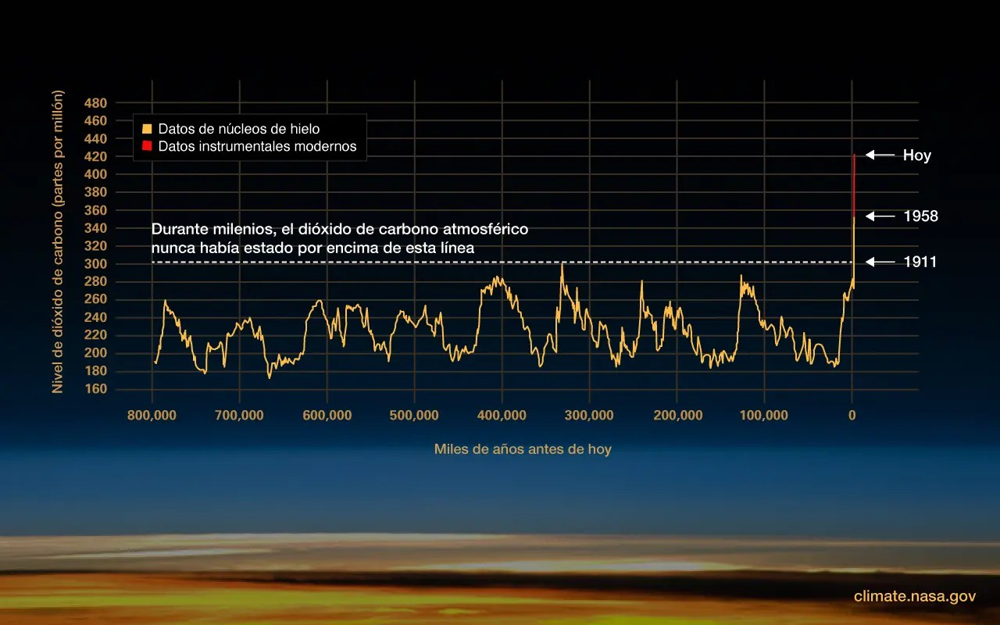

Materiales Educativos
Accede informaccion sobre el cambio climatico
ILa tasa de cambio desde mediados del siglo XX no tiene precedentes en milenios.
El clima de la Tierra ha cambiado a lo largo de la historia. Solo en los últimos 800.000 años, ha habido ocho ciclos de glaciaciones y períodos más cálidos, y el final de la última glaciación hace unos 11.700 años marcó el comienzo de la era climática moderna y de la civilización humana. La mayoría de estos cambios climáticos se atribuyen a variaciones muy pequeñas en la órbita de la Tierra que cambian la cantidad de energía solar que recibe nuestro planeta.
La tendencia de calentamiento actual es diferente porque es claramente el resultado de las actividades humanas desde mediados del siglo XIX y avanza a un ritmo que no se ha visto en muchos milenios recientes.1 Es innegable que las actividades humanas han producido los gases atmosféricos que han atrapado una mayor parte de la energía del Sol en el sistema de la Tierra. Esta energía adicional ha calentado la atmósfera, el océano y la tierra, y se han producido cambios rápidos y generalizados en la atmósfera, el océano, la criósfera y la biosfera.
Los satélites en órbita terrestre y las nuevas tecnologías han ayudado a los científicos a ver el panorama general, recopilando muchos tipos diferentes de información sobre nuestro planeta y su clima en todo el mundo. Estos datos, recopilados durante muchos años, revelan los signos y patrones de un clima cambiante.
Los científicos demostraron la naturaleza de atrapar el calor del dióxido de carbono y otros gases a mediados del siglo XIX. Muchos de los instrumentos científicos que usa la NASA para estudiar nuestro clima se enfocan en cómo estos gases afectan el movimiento de radiación infrarroja a través de la atmósfera. A partir de los impactos medidos de los aumentos de estos gases, no hay duda de que el aumento de los niveles de gases de efecto invernadero calienta la Tierra en respuesta.
La evidencia del cambio climático rápido es convincente:
La temperatura global está aumentando
La temperatura promedio de la superficie del planeta ha aumentado aproximadamente 2 grados Fahrenheit (1 grado Celsius) desde finales del siglo XIX, un cambio impulsado en gran medida por el aumento de las emisiones de dióxido de carbono a la atmósfera y otras actividades humanas. La mayor parte del calentamiento ocurrió en los últimos 40 años, los siete años más recientes han sido los más cálidos. Los años 2016 y 2020 están empatados como el año más cálido registrado.5
El océano se está calentando
El océano ha absorbido gran parte de este aumento de calor, y los 100 metros superiores (alrededor de 328 pies) del océano muestran un calentamiento de más de 0,6 grados Fahrenheit (0,33 grados Celsius) desde 1969. La Tierra almacena el 90 % de la energía adicional en el océano.
Las capas de hielo se están reduciendo
Las capas de hielo de Groenlandia y la Antártida han disminuido en masa. Los datos del Gravity Recovery and Climate Experiment de la NASA muestran que Groenlandia perdió un promedio de 279.000 millones de toneladas de hielo por año entre 1993 y 2019, mientras que la Antártida perdió alrededor de 148.000 millones de toneladas de hielo por año.
Los glaciares están desapareciendo
Los glaciares se están retirando en casi todas partes del mundo, incluso en los Alpes, el Himalaya, los Andes, las Montañas Rocosas, Alaska y África.
La capa de nieve está disminuyendo
Las observaciones satelitales revelan que la cantidad de nieve primaveral en el hemisferio norte ha disminuido en las últimas cinco décadas y la nieve se está derritiendo antes.
El nivel del mar está aumentando
El nivel global del mar subió unas 8 pulgadas (20 centímetros) en el último siglo. Sin embargo, la tasa en las últimas dos décadas es casi el doble que la del siglo pasado y se acelera ligeramente cada año
El hielo marino del Ártico está disminuyendo
Tanto la extensión como el grosor del hielo marino del Ártico han disminuido rápidamente en las últimas décadas.
Los eventos extremos están aumentando en frecuencia
La cantidad de eventos de temperatura alta récord en los Estados Unidos ha ido en aumento, mientras que la cantidad de eventos de temperatura baja récord ha disminuido desde 1950. Los EE. UU. también ha sido testigo de un número creciente de eventos de lluvia intensa.
La acidificación de los océanos está aumentando
Desde el comienzo de la Revolución Industrial, la acidez de las aguas superficiales del océano ha aumentado aproximadamente un 30 %. Este aumento se debe a que los seres humanos emiten más dióxido de carbono a la atmósfera y, por lo tanto, el océano absorbe más. El océano ha absorbido entre el 20 % y el 30 % de las emisiones antropógenas totales de dióxido de carbono en las últimas décadas (entre 7.200 y 10.800 millones de toneladas métricas al año).